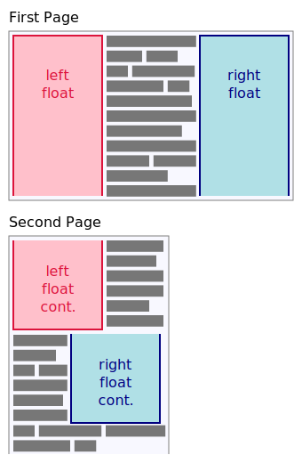
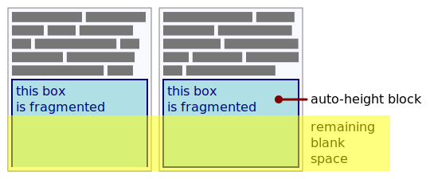
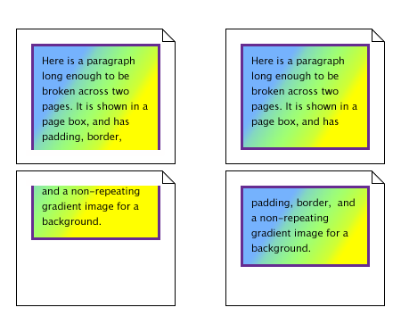
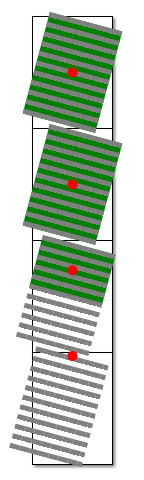

Breaking the Web, one fragment at a time
1. Introduction
This section is not normative.
In paged media (e.g., paper, transparencies, photo album pages, pages displayed on computer screens as printed output simulations), as opposed to continuous media, the content of the document is split into one or more discrete display surfaces. In order to avoid awkward breaks (such as halfway through a line of text), the layout engine must be able to shift around content that would fall across the page break. This process is called pagination.
In CSS, in addition to paged media, certain layout features such as regions [CSS3-REGIONS] and multi-column layout [CSS3COL] create a similarly fragmented environment. The generic term for breaking content across containers is fragmentation. This module explains how content breaks across fragmentation containers (fragmentainers) such as pages and columns and how such breaks can be controlled by the author.
1.1. Module Interactions
This module replaces and extends the pagination controls defined in [CSS21] section 13.3 and in [CSS3PAGE].
1.2. Values
This specification follows the CSS property definition conventions from [CSS21]. Value types not defined in this specification are defined in CSS Level 2 Revision 1 [CSS21]. Other CSS modules may expand the definitions of these value types: for example [CSS3VAL], when combined with this module, adds the initial value to the properties defined here.
In addition to the property-specific values listed in their definitions, all properties defined in this specification also accept the inherit keyword as their property value. For readability it has not been repeated explicitly.
2. Fragmentation Model and Terminology
- fragmentation container (fragmentainer)
- A box—such as a page box, column box, or region—that contains a portion (or all) of a fragmented flow. Fragmentainers can be pre-defined, or generated as needed. When breakable content would overflow a fragmentainer in the block dimension, it breaks into the next container in its fragmentation context instead.
- fragmentation context
- An ordered series of fragmentainers, such as created by a multi-column element, a chain of CSS regions, or a paged media display. A given fragmentation context can only have one block flow direction across all its fragmentainers. (Descendants of the fragmentation root may have other block flow directions, but fragmentation proceeds according to the block flow direction applied to the fragmentation root.)
- fragmented flow
- Content that is being laid out in a fragmentation context. The fragmented flow consists of the content of a (possibly anonymous) box called the fragmentation root.
- fragmentation direction
- The block flow direction of the fragmentation context, i.e. the direction in which content is fragmented. (In this level of CSS, content only fragments in one dimension.)
- fragmentation
- The process of splitting a content flow across the fragmentainers that form a fragmentation context.
- box fragment or fragment
- The portion of a box that belongs to exactly one fragmentainer. A box in continuous flow always consists of only one fragment. A box in a fragmented flow consists of one or more fragments. Each fragment has its own share of the box’s border, padding, and margin, and therefore has its own padding area, border area, and margin area. (See box-decoration-break, which controls how these are affected by fragmentation.)
- remaining fragmentainer extent
- The remaining block-axis space in the fragmentainer available to a given element, i.e. between the end of preceding content in fragmentainer and the edge of the fragmentainer.
Each fragmentation break (hereafter, break) ends layout of the fragmented box in the current fragmentainer and causes the remaining content to be laid out in the next fragmentainer, in some cases causing a new fragmentainer to be generated to hold the deferred content.
Breaking inline content into lines is another form of fragmentation, and similarly creates box fragments when it breaks inline boxes across line boxes. However, inline breaking is not covered here; see [CSS21]/[CSS3TEXT].
2.1. Parallel Fragmentation Flows
When multiple formatting contexts are laid out parallel to each other, fragmentation is performed independently in each formatting context. For example, if an element is floated, then a forced break inside the float will not affect the content outside the float (except insofar as it may increase the height of the float). UAs may (but are not required to) adjust the placement of unforced breaks in parallel formatting contexts to visually balance such side-by-side content, but must not do so to match a forced break.
The following are examples of parallel flows whose contents will fragment independently:
- The contents of a float vs. the content wrapping outside the float.
- The contents of a float vs. the contents of an adjacent float.
- The contents of each table cell in a single table row.
- The contents of each grid item in a single grid row.
- The contents of each flex item in a flex layout row.
- The contents of absolutely-positioned elements that cover the same range of their containing block’s fragmentation context.
Content overflowing the content edge of a fixed-size box is considered parallel to the content after the fixed-size box and follows the normal fragmentation rules. Although overflowing content doesn’t affect the size of the fragmentation root box, it does increase the length of the fragmented flow, spilling into or generating additional fragmentainers as necessary.
2.2. Nested Fragmentation Flows
Breaking a fragmentainer F effectively splits the fragmentainer into two fragmentainers (F1 and F2). The only difference is that, with regards to the content of fragmentainer F, the type of break between the two pieces F1 and F2 is the type of break created by the fragmentation context that split F, not the type of break normally created by F’s own fragmentation context.
3. Controlling Breaks
The following sections explain how breaks are controlled in a fragmented flow. A page/column/region break opportunity between two boxes is under the influence of the containing block’s break-inside property, the break-after property of the preceding element, and the break-before property of the following element. A page/column/region break opportunity between line boxes is under the influence of the containing block’s break-inside, widows, and orphans properties. A fragmentation break can be allowed, forced, or discouraged depending on the values of these properties. A forced break overrides any break restrictions acting at that break point. In the case of forced page breaks, the author can also specify on which page (left or right) the subsequent content should resume.
See the section on rules for breaking for the exact rules on how these properties affect fragmentation.
3.1. Breaks Between Boxes: the break-before and break-after properties
These properties specify page/column/region break behavior before/after the generated box. The forced break values left, right, recto, verso, page, column and region create a forced break in the flow while the avoid break values avoid, avoid-page, avoid-column and avoid-region indicate that content should be kept together.
Since breaks are only allowed between siblings, not between a box and its container (see Possible Break Points), a break-before value on a first-child box is propagated to its container. Likewise a break-after value on a last-child box is propagated to its container. (Conflicting values combine as defined below.) This propagation stops before it breaks through the nearest matching fragmentation context.
Values for break-before and break-after are defined in the sub-sections below. User Agents must apply these properties to boxes in the normal flow of the fragmentation root. User agents should also apply these properties to floated boxes whose containing block is in the normal flow of the root fragmented element. User agents may also apply these properties to other boxes.
Generic Break Values
These values have an effect regardless of the type of fragmented context containing the flow.
- auto
- Neither force nor forbid a break before/after the principal box.
- avoid
- Avoid a break before/after the principal box.
Page Break Values
These values only have an effect in paginated contexts; if the flow is not paginated, they have no effect.
- avoid-page
- Avoid a page break before/after the principal box.
- page
- Always force a page break before/after the principal box.
- left
- Force one or two page breaks before/after the principal box so that the next page is formatted as a left page.
- right
- Force one or two page breaks before/after the principal box so that the next page is formatted as a right page.
- recto
- Force one or two page breaks before/after the principal box so that the next page is formatted as either a left page or a right page, whichever is second (according to the page progression) in a page spread.
- verso
- Force one or two page breaks before/after the principal box so that the next page is formatted as either a left page or a right page, whichever is first (according to the page progression) in a page spread.
Column Break Values
These values only have an effect in multi-column contexts; if the flow is not within a multi-column context, they have no effect.
- avoid-column
- Avoid a column break before/after the principal box.
- column
- Always force a column break before/after the principal box.
Region Break Values
These values only have an effect in multi-region contexts; if the flow is not linked across multiple regions, these values have no effect.
- avoid-region
- Avoid a region break before/after the principal box.
- region
- Always force a region break before/after the principal box.
3.2. Breaks Within Boxes: the break-inside property
This property specifies page/column/region break behavior within the element’s principal box. Values have the following meanings:
- auto
- Impose no additional breaking constraints within the box.
- avoid
- Avoid breaks within the box.
- avoid-page
- Avoid a page break within the box.
- avoid-column
- Avoid a column break within the box.
- avoid-region
- Avoid a region break within the box.
3.3. Breaks Between Lines: orphans, widows
| Name: | orphans, widows |
|---|---|
| Value: | <integer> |
| Initial: | 2 |
| Applies to: | block containers |
| Inherited: | yes |
| Percentages: | N/A |
| Media: | visual |
| Computed value: | specified value |
The orphans property specifies the minimum number of line boxes in a block container that must be left in a fragment before a fragmentation break. The widows property specifies the minimum number of line boxes of a block container that must be left in a fragment after a break. Examples of how they are used to control fragmentation breaks are given below.
Only positive integers are allowed as values of orphans and widows. Negative values and zero are invalid and must cause the declaration to be ignored.
If a block contains fewer lines than the value of widows or orphans, the rule simply becomes that all lines in the block must be kept together.
3.4. Page Break Aliases: the page-break-before, page-break-after, and page-break-inside properties
For compatibility with CSS Level 2, UAs that conform to [CSS21] must alias the page-break-before, page-break-after, and page-break-inside properties to break-before, break-after, and break-inside by treating the page-break-* properties as shorthands for the break-* properties with the following value mappings:
| Shorthand (page-break-*) Values | Longhand (break-*) Values |
|---|---|
| auto | left | right | avoid | auto | left | right | avoid |
| always | page |
4. Rules for Breaking
A fragmented flow may be broken across fragmentainers at a number of possible break points. In the case of forced breaks, the UA is required to break the flow at that point. In the case of unforced breaks, the UA has to choose among the possible breaks that are allowed.
To guarantee progress, fragmentainers are assumed to have a minimum block size of 1px regardless of their used size.
4.1. Possible Break Points
Fragmentation splits boxes in the block flow dimension. In block-and-inline flow, breaks may occur at the following places:
- Class A
-
Between sibling boxes of the following types:
- Block-parallel Fragmentation
- When the block flow direction of the siblings' containing block is parallel to that of the fragmentation context: in-flow block-level boxes, a float and an immediately-adjacent in-flow or floated box, table row group boxes, table row boxes, multi-column column row boxes.
- Block-perpendicular Fragmentation
- When the block flow direction of the siblings' containing block is perpendicular to that of the fragmentation context: table column group boxes, table column boxes, multi-column column boxes.
- Class B
- Between line boxes inside a block container box.
- Class C
- Between the content edge of a block container box and the outer edges of its child content (margin edges of block-level children or line box edges for inline-level children) if there is a (non-zero) gap between them.
There is no inherent prioritization among these classes of break points. However, individual break points may be prioritized or de-prioritized by using the breaking controls.
Other layout models may add breakpoints to the above classes. For example, [CSS3-FLEXBOX] adds certain points within a flex formatting context to classes A and C.
Some content is not fragmentable, for example many types of replaced elements [CSS21] (such as images or video), scrollable elements, or a single line of text content. Such content is considered monolithic: it contains no possible break points. Any forced breaks within such boxes therefore cannot split the box, and must therefore also be ignored by the box’s own fragmentation context.
In addition to any content which is not generally fragmentable, UAs may consider as monolithic any elements with overflow set to auto or scroll and any elements with overflow: hidden and a non-auto logical height (and no specified maximum logical height).
Since line boxes contain no possible break points, inline-block and inline-table boxes (and other inline-level display types that establish a new formatting context) may also be considered monolithic.
4.2. Types of Breaks
There are different types of breaks in CSS, defined based on the type of fragmentainers they span:
- page break
- A break between two page boxes. [CSS3PAGE]
- spread break
- A break between two page boxes that are not associated with facing pages. A spread break is always also a page break. [CSS3PAGE]
- column break
- A break between two column boxes. Note that if the column boxes are on different pages, then the break is also a page break. Similarly, if the column boxes are in different regions, then the break is also a region break. [CSS3COL]
- region break
- A break between two regions. Note that if the region boxes are on different pages, then the break is also a page break. [CSS3-REGIONS]
A fifth type of break is the line break, which is a break between two line boxes. These are not covered in this specification; see [CSS21] [CSS3TEXT].
4.3. Forced Breaks
A forced break is one explicitly indicated by the style sheet author. A forced break occurs at a class A break point if, among the break-after properties specified on or propagated to the earlier sibling box and the break-before properties specified on or propagated to the later sibling box there is at least one with a forced break value. (Thus a forced break value effectively overrides any avoid break value that also applies at that break point.)
When multiple forced break values apply to a single break point, they combine such that all types of break are honored. When left, right, recto, and/or verso are combined, the value specified on the latest element in the flow wins.
A forced page break must also occur at a class A break point if the last line box above this margin and the first one below it do not have the same value for page. See [CSS3PAGE]
When a forced break occurs, it forces ensuing content into the next fragmentainer of the type associated with the break, breaking through as many fragmentation contexts as necessary until the specified break types are all satisfied. If the forced break is not contained within a matching type of fragmentation context, then the forced break has no effect.
4.4. Unforced Breaks
While breaking controls can force breaks, they can also discourage them. An unforced break is one that is inserted automatically by the UA in order to prevent content from overflowing the fragmentainer. The following rules control whether unforced breaking at a possible break point is allowed:
- Rule 1
- A fragmented flow may break at a class A break point only if all the break-after and break-before values applicable to this break point allow it, which is when at least one of them forces a break or when none of them forbid it (avoid or avoid-page/avoid-column/avoid-region, depending on the break type).
- Rule 2
- However, if all of them are auto and a common ancestor of all the elements has a break-inside value of avoid, then breaking here is not allowed.
- Rule 3
- Breaking at a class B break point is allowed only if the number of line boxes between the break and the start of the enclosing block box is the value of orphans or more, and the number of line boxes between the break and the end of the box is the value of widows or more.
- Rule 4
- Additionally, breaking at class B or class C break points is allowed only if the break-inside property of all ancestors is auto.
If the above doesn’t provide enough break points to keep content from overflowing the fragmentainer, then rule 3 is dropped to provide more break points.
If that still does not lead to sufficient break points, then rules 1, 2 and 4 are dropped in order to find additional breakpoints. In this case the UA may use the avoids that are in effect at those points to weigh the appropriateness of the new breakpoints; however, this specification does not suggest a precise algorithm.
If even that does not lead to sufficient break points, cloned margins/border/padding at on the block-end side are truncated; and if more room is still needed, cloned margins/border/padding are truncated at the block-end side as well.
Finally, if there are no possible break points below the top of the fragmentainer, and not all the content fits, the UA may break anywhere in order to avoid losing content off the edge of the fragmentainer. In such cases, the UA may also fragment the contents of monolithic elements by slicing the element’s graphical representation. However, the UA must not break at the top of the page, i.e. it must place at least some content on each fragmentainer, so that each fragmentainer has a non-zero amount of content, in order to guarantee progress through the content.
4.5. Optimizing Unforced Breaks
While CSS3 requires that a fragmented flow must break at allowed break points in order to avoid overflowing the fragmentainers in its fragmentation context, it does not define whether content breaks at a particular allowed break. However, it is recommended that user agents observe the following guidelines (while recognizing that they are sometimes contradictory):
- Break as few times as possible.
- Make all fragmentainers that don’t end with a forced break appear to be equally filled with content.
- Avoid breaking inside a replaced element.
Suppose, for example, that the style sheet contains orphans : 4, widows : 2, and there is space for 20 lines (line boxes) available at the bottom of the current page, and the next block in normal flow is considered for placement:
- If the block contains 20 line boxes or fewer, it should be placed on the current page.
- If the block contains 21 or 22 line boxes, the second fragment of the paragraph must not violate the widows constraint, and so the second fragment must contain at least two line boxes; likewise the first fragment must contain at least four line boxes.
- If the block contains 23 line boxes or more, the first fragment should contain 20 lines and the second fragment the remaining lines. But if any fragment of the block is placed on the current page, that fragment must contain at least four line boxes and the second fragment at least two line boxes.
Now suppose that orphans is 10, widows is 20, and there are 8 lines available at the bottom of the current page:
- If the block contains 8 lines or fewer, it should be placed on the current page.
- If the block contains 9 lines or more, it must NOT be split (that would violate the orphans constraint), so it must move as a block to the next page.
5. Box Model for Breaking
The sizing terminology used in this section is defined in [CSS3-SIZING].
5.1. Breaking into Varying-size Fragmentainers
When a flow is fragmented into varying-size fragmentainers, the following rules are observed for adapting layout:
- Intrinsic sizes are calculated and maintained across the entire element. Where an initial containing block size is needed to resolve an intrinsic size, assume the size of the first fragmentainer defining a fragmentation context.
- Layout is performed per-fragmentainer, with each fragmentainer continuing progress from the breakpoint on the previous, but recalculating sizes and positions using its own size as if the entire element were fragmented across fragmentainers of this size. Progress is measured in percentages (not absolute lengths) of used/remaining fragmentainer extent and in amount of used/remaining content. However, when laying out monolithic elements, the UA may instead maintain a consistent inline size and resolved block size across fragmentainers.
-
Fragments of boxes that began on a previous fragmentainer must obey
placement rules with the additional constraint that fragments must
not be positioned above the block-start edge of the fragmentainer.
If this results in a box’s continuation fragment
shifting away from the block-start edge of the fragmentainer, then box-decoration-break: clone, if specified, wraps the fragment
with the box’s margin in addition to its padding and border.

Illustration of breaking in varying-size fragmentainers.
Since document order of elements doesn’t change during fragmentation, fragments are processed following the same rules that apply to continuous media. In particular, the order of floats is preserved across all fragments and follows the same rules as defined in CSS 2.1 9.5.
Below are listed (informatively) some implications of these rules:
- Boxes (including tables) fullfilling layout constraints at their fill-available or percentage-based size may change inline size across pages.
- Boxes (including tables) fulfilling layout constraints at their min-content, max-content, or absolute-length size will maintain their inline size across pages.
- A block-level continuation fragment may be placed below the top of the page if, e.g. it establishes a block formatting context and is placed beside a float and both it and the float continue onto a narrower page that is too narrow to hold both of them side-by-side.
- An element adjacent to a preceding float on one page may wind up above the float’s continuation on the next page if, e.g. that float is pushed down because it no longer fits side-by-side with an earlier float that also continues onto this narrower page.
- A left float may appear on a page before the remaining fragments of a preceding right float if that right float does not fit on the earlier page. However another right float will be forced down until the preceding right float’s remaining fragment can be placed.
Here is an example that shows the use of percentage-based progress: Suppose we have an absolutely-positioned element that is positioned top: calc(150% + 30px) and has height: calc(100% - 10px). If it is placed into a paginated context with a first page height of 400px, a second page of 200px, and a third page of 600px, its layout progresses as follows:
- First, the top position is resolved against the height of the first page. This results in 630px. Since the first page has a height of only 400px, layout moves to the second page, recording progress of 400/630 = 63.49% with 36.51% left to go.
- Now on the second page, the top position is again resolved, this time against the height of the second page. This results in 330px. The remaining 36.51% of progress thus resolves to 120.5px, placing the top edge of the element 120.5px down the second page.
- Now the height is resolved against the second page; it resolves to 190px. Since there are only 79.5px left on the page, layout moves to the third page, recording progress of 79.5/190 = 41.84%, with 58.16% left to go.
- On the third page, the height resolves to 590px. The remaining 58.16% of progress thus resolves to 343.1px, which fits on this page and completes the element.
5.2. Adjoining Margins at Breaks
When an unforced break occurs between block-level boxes, any margins adjoining the break truncate to the remaining fragmentainer extent before the break, and are truncated to zero after the break. When a forced break occurs there, adjoining margins before the break are truncated, but margins after the break are preserved. Cloned margins are always truncated to zero on block-level margins.
5.3. Splitting Boxes
When a box breaks, its content box extends to fill any remaining fragmentainer extent (leaving room for any margins/borders/padding applied by box-decoration-break: clone) before the content resumes on the next fragmentainer. (A fragmentation break that pushes content to the next fragmentainer effectively increases the block size of a box’s contents.)
The extra block size contributed by fragmenting the box (i.e. the distance from the break point to the edge of the fragmentainer) contributes progress towards any specified limits on the box’s block size.

Illustration of filling the remaining fragmentainer extent.
5.4. Fragmented Borders and Backgrounds: the box-decoration-break property
| Name: | box-decoration-break |
|---|---|
| Value: | slice | clone |
| Initial: | slice |
| Applies to: | all elements |
| Inherited: | no |
| Percentages: | N/A |
| Media: | visual |
| Computed value: | as specified |
| Animatable: | no |
When a break (page/column/region/line) splits a box, the box-decoration-break property controls
- whether the box’s margins, borders, padding, and other decorations wrap the broken edges of the box fragments
- how the background positioning area [CSS3BG] (and mask positioning area [CSS-MASKING-1], shape reference box [CSS-SHAPES-1], etc.) is derived from or duplicated across the box fragments and how the element’s background is drawn within them.
Values have the following meanings:
- clone
-
Each box fragment is independently wrapped with the border, padding, and margin.
The border-radius and border-image and box-shadow, if any,
are applied to each fragment independently.
The background is drawn independently in each fragment of the element.
A no-repeat background image will thus be rendered once in each fragment of the element.
Note: Cloned margins are truncated on block-level boxes.
- slice
-
The effect is as though the element were rendered with no breaks present, and then sliced by the breaks afterward: no border and no padding are inserted at a break; no box-shadow is drawn at a broken edge; and backgrounds, border-radius, and the border-image are applied to the geometry of the whole box as if it were unbroken.

Two possibilities for box-decoration-break: on the left, the value slice, on the right the value clone.
UAs may also apply box-decoration-break to control rendering at bidi-imposed breaks, i.e. when bidi reordering causes an inline to split into non-contiguous fragments. Otherwise such breaks are always handled as slice.
For inline elements, which side of a fragment is considered the broken edge is determined by the parent element’s inline progression direction. For example, if an inline element whose parent has direction: rtl breaks across two lines, the left edge of the fragment on the first line will be the broken edge. (Note in particular that neither the element’s own direction nor its containing block’s direction is used.) See [CSS3-WRITING-MODES].
5.4.1. Joining Boxes for slice
For box-decoration-break: slice, backgrounds (and border-image) are drawn as if applied to a composite box consisting of all of the box’s fragments reassembled in visual order. This theoretical assembly occurs after the element has been laid out (including any justification, bidi reordering, page breaks, etc.). To assemble the composite box...
- For boxes broken across lines
- First, fragments on the same line are connected in visual order. Then, fragments on subsequent lines are ordered according to the element’s inline base direction and aligned on the element’s dominant baseline. For example, in a left-to-right containing block (direction is ltr), the first fragment is the leftmost fragment on the first line and fragments from subsequent lines are put to the right of it. In a right-to-left containing block, the first fragment is the rightmost on the first line and subsequent fragments are put to the left of it.
- For boxes broken across columns
- Fragments are connected as if the column boxes were glued together in the block flow direction of the multi-column element.
- For boxes broken across pages
- Fragments are connected as if page content areas were glued together in the block flow direction of the root element.
- For boxes broken across regions
- Fragments are connected as if region content areas were glued together in the block flow direction of the principal writing mode of the region chain.
If the box fragments have different widths (heights, if the fragments are joined horizontally), then each piece draws its portion of the background assuming that the whole element has the same width (height) as this piece. However, if the used height (width) of an image is derived from the width (height) of the box, then it is calculated using the widest fragment’s width and maintained as a fixed size. This ensures that right-aligned images stay aligned to the right edge, left-aligned images stay aligned to the left edge, centered images stay centered, and stretched images cover the background area as intended while preserving continuity across fragments.
5.5. Transforms, Positioning, and Pagination
Fragmentation interacts with layout, and thus occurs before relative positioning [CSS21], transforms [CSS3-TRANSFORMS], and any other graphical effects. Such effects are applied per fragment: for example, rotation applied to a fragmented box will calculate a rotation origin for each fragment and independently rotate that fragment around its origin. (The origin of an overflow-only fragment is determined as if that content were overflowing an empty box with zero margins/borders/padding at the start of the fragmentainer.) However, the separation and transfer of page boxes should occur last; thus a transformed fragment that spans pages should be sliced at the page breaks and print in its entirety rather than being clipped by its originating page.

A fixed-height box spanning 2.5 pages with overflow content spanning to a total of 4 pages. The transform origin of each fragment is the center of its border box; the fragment without a border box assumes a zero-height box at the start of the overflow.
Absolute positioning affects layout and thus interacts with fragmentation. Both the coordinate system and absolutely-positioned boxes belonging to a containing block will fragment across pages in the same fragmentation flow as the containing block.
UAs are not required to correctly position boxes that span a fragmentation break and whose block-start edge position depends on where the box’s content fragments. UAs with memory constraints that prevent them from manipulating an entire document in memory are not required to correctly position absolutely-positioned elements that end up on a previously-rendered page.
Changes
The following significant changes were made since the 29 January 2015 Working Draft:
- Dropped any and always values of break-*.
- Switched priority of widows and orphans vs. break-* restrictions to make widows and orphans lower-priority rather than higher-priority.
- Defined that margins are also cloned for box-decoration-break: clone (but are truncated in block-level layout).
- Corrected unforced breaking rules (Class A) to handle new break types (original rules only handled page breaks).
- Allowed dropping cloned box decorations when running out of room.
A Disposition of Comments is available.
Acknowledgments
The editors would like to thank Mihai Balan, Michael Day, Alex Mogilevsky, Shinyu Murakami, Florian Rivoal, and Alan Stearns for their contributions to this module. Special thanks go to the former [CSS3PAGE] editors Jim Bigelow (HP), Melinda Grant (HP), Håkon Wium Lie (Opera), and Jacob Refstrup (HP) for their contributions to this specification, which is a successor of their work there.